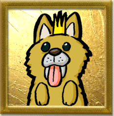
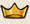

ほいっと、交換日記のはじまりはじまり。
みなさまこんにちは、和田です。
今回はゲーム自体の話とは少し離れて
自分の会社のブランドみたいな話をしてみようかと思います。
ひょっとしたらすごくデインジャラスなゾーンかも。
実はどっかで語ったことがあるかもしれないけど、
私自身はシリーズってものが大嫌いでした。
シリーズがゲームをダメにするとか本気で考えてた。青いですねぇ（笑
なので、最初にスーパーファミコンでぼくものを作った後は
続編とか全く考えてませんでした。
ＳＦＣが少しだけ評価を受けて思ったより売れたのをうけて
当時の上司に説得されたのと、作り終わった後に
ああ、「あれはこうすればよかったなぁ」みたいなのが残ってしまったので
とりあえずＧＢ版とＮ６４での「２」までは作るってことで
ふたたびぼくものを作ることになりました。
そうこうしてるうちに、何となく会社での立場を責任あるものにされたりとか
いうことがあって、ゲーム作りを少しビジネスとしてみなければいけなくなった。
当時の自分は、やだぁ面白い事だけ考えて作ってたいー！
とかいう感じで、もう完全に騙された感につつまれながら
ＰＳでハーベストムーンを出して、ｆｏｒガールを出してとやってました。
私には基本的にみんなにほめられたいみたいなところがあるらしく
そんな中で、ファンの声をかなり聞いていたと思うんですが、
それに対して怒られたり、ほめられたりすることがだんだん面白くなってきた。
そうやってファンの皆さんとキャッチボールをしながら
シリーズを育てていくことも悪くないなって思えてきて、
なんだかんだ楽しく今までやってきました。
今のマーベラスのイメージって良くも悪くもぼくものだと思うんです。
その間にも自分が現役の頃は木村さんとやったチュウリップやぼくは小さいやら
最近だと現場はやらずともヴァルハラ立ち上げたり、新牧場を展開させたりと、
いろんなチャレンジしてるんですけどね。
でもイメージはイメージとして確実にあって、だから木村Ｐに怒られたんだと思う（笑
で、やっと本題なんだけど。
マーベラスっていうブランドは、やっぱまだまだイマイチというか。
最近になってやっと「おっ！意外と良いかも」って人も出てきてくれてはいるけど
このProjectOにしても、半信半疑で見てる人が多いと思うんですよね。
おそらく他の大手メーカーさんがやるよりも確実に弱いと思う。
だからこそ、ここで宣言しておきたいです。
絶対に面白いゲームになる！バグとか残さない！
それでホントに出来てなかったら、自分たちの未来も無いと思うし
本当にゲームが好きで、良いものを世界中にって
思えてる人たちが消えてしまうようだと
ゲーム業界の未来も明るくならないと思います。
ただし、ブランドイメージっていうのは宣言して出来るものじゃないんですよね。
今発売されているソフトはもちろんだけど、それこそ、この「Ｏ」が世の中に
出て行くまでにいろんな意味で良いソフトを出し続けて、みなさんの信頼を
勝ち取っていくしかないと思います。
それでもってこの「Ｏ」が発売できるころには、
「マーベラスのソフトだから期待できるよね」って
たくさんの人が感じてくれているようにしていきたいですね。
そんな意気込みで、この先もやっていきます。
それでは現場の木村さーんお願いします！
みなさんこんにちは、プロデューサーの木村です。
ブログ閲覧ありがとうございます。
それでは、プロジェクト交換日記をはじめますか（笑）
「最近は卓球ばかりやって仕事してないんじゃないか？」
・・などというつっこみも友人からありましたが、実は地道にプロジェクトの準備をしておりました。しかも、今回はディレクターじゃない立ち位置からアプローチします。
初心にかえってゲームというオモチャ作りの根源をみつめていきたいですねぇ。
今は開発の始まりの始まり。いいスタートがきれています。
色々難しいところもあるんですが、九州東京の開発メンバーと良いコラボレーションをして、最高なものを作り上げたいものです。
いやー、九州は暑いけど、人間も熱いですな。
今回のものづくりは遠距離恋愛でもあり、昔の恋人との再会でもあり、飲み友達との不倫でもあったりして、とにかく、味わい深いメンバー。この面子で巻き起こるコラボレーションはすごく興味深い。
ある意味、僕自身、ユーザーになって開発が終わるのを楽しみに待っていたいくらいです（笑）
う～ん、たしかに宣伝の高島さんが「書いて良いよ」って言ってくれるまでは、
書いちゃだめなんですけどね～。
ちょっとだけふれちゃおうかな。（すいません、高島さん）
作品のテイストについて、さわりだけ書いちゃいましょう！
今まで僕が手がけてきた作品は童話風だったり昭和風だったりホラーだったりと、色々ありましたが・・・、
今回は僕の中では原点回帰的な意味もこめて、童話風です。
ペットボトルというよりは、ワインボトルの緑色のガラス。
アメコミというよりは、デ・クレッシー。
D&Dというよりは、ほらふき男爵。
シリアスというよりは、ポップ＆シュール。
リアル等身というよりはちびキャラ。
戦争映画というよりは、童話。
・・と、まぁ、今回はこんな感じ・・です。
（どんなかんじなんだ～）
まだまだ、仕様を固めている段階ですが、
開発メンバーがまとめてくる仕様を確認するたびに、
「僕ら、本当に面白い仕事をしてるなぁ～」と思う今日このごろ。
とにもかくにも、PROJECT O 始動。
スタッフ全員一丸となってがんばりたいものです。
それではまた来週末のブログに乞うご期待。
来週は、またまた和田さんの番です！
よろしくお願いします！
※そうそう、みなさん、ファミ通の人材募集広告みてくれましたか？
このプロジェクト、まだまだ人がたりん。九州で仕事できる人大募集中です。
ゲーム開発のツワモノ募集中です！！
九州で仕事できるツワモノはここにアクセス＞http://www.townfactory.net
みなさまこんにちは、
マーベラスインタラクティブの和田です。
当ブログにアクセスいただきありがとうございます。
私は社長とかもやらせてもらっている関係で、
通常はあまり個人的に好き勝手な事は書けないんですが、
このブログでは、純粋に一人のクリエイターとして
プロジェクトＯの木村プロデューサーと
書ける範囲ギリギリまで書いて盛り上がっていくつもりです。
ここを見ていただいているという事は
今週のファミ通を見ていただいたのだと思います。
インタビューいかがでしたか。
多分読んでいただいても、今出ている情報だけじゃ
なかなかどんなゲームなのか伝わんないだろうなって思います。
伝わんない情報なんて出すなって思うかもしれませんが
まあそれはおいといて。
実は私が最初に社内でプレゼンした時もそうでした。
コンセプトはハッキリしていたし、骨組みになるイメージは
溢れるほどあったんだけど、まだゲームの仕様としては
不確定なことがたくさんあったんですね。
私はイケイケだけど、他のみんなは「ぽかーん」って感じで。
そういう意味では、木村がプロデューサーとして
参加してくれてなかったらやばかったかもです。
ゲームは絶対一人じゃ作れないので、作りたいものが
きちんとスタッフに伝わっていかないと絶対良い物は出来ません。
彼が具体的なシステムに落とし込む流れを作ってくれたことで
だんだんゲームが形になってきて、彼自身のアイデアはもちろん、
周りの人からガンガン面白いアイデアを引き出すから
今の「Ｏ」は良い意味で最初にイメージしていたものとは
だいぶ違ったものになってきました。
とは言いながらもコンセプトはしっかり守ってくれているし、
逆によし出来るな！って手応えも感じていて、私自身ドンドン
楽しみになってきています。
このプロジェクトについては、しばらくは書ける事が
かなり限られているので、宣伝の高島マネージャーが
「書いて良いよ」って言ってくれるまでは、
私たちの作る遊ぶ含めたゲーム観や、面白いと思ってることについて、
木村Ｐと交換日記風にわいわいがやがや書いていこうと思っています。
今後とも当ブログをよろしくお願いします！
みなさまこんにちは、
マーベラスインタラクティブの和田です。
当ブログにアクセスいただきありがとうございます。
私は社長とかもやらせてもらっている関係で、
通常はあまり個人的に好き勝手な事は書けないんですが、
このブログでは、純粋に一人のクリエイターとして
プロジェクトＯの木村プロデューサーと
書ける範囲ギリギリまで書いて盛り上がっていくつもりです。
ここを見ていただいているという事は
今週のファミ通を見ていただいたのだと思います。
インタビューいかがでしたか。
多分読んでいただいても、今出ている情報だけじゃ
なかなかどんなゲームなのか伝わんないだろうなって思います。
伝わんない情報なんて出すなって思うかもしれませんが
まあそれはおいといて。
実は私が最初に社内でプレゼンした時もそうでした。
コンセプトはハッキリしていたし、骨組みになるイメージは
溢れるほどあったんだけど、まだゲームの仕様としては
不確定なことがたくさんあったんですね。
私はイケイケだけど、他のみんなは「ぽかーん」って感じで。
そういう意味では、木村がプロデューサーとして
参加してくれてなかったらやばかったかもです。
ゲームは絶対一人じゃ作れないので、作りたいものが
きちんとスタッフに伝わっていかないと絶対良い物は出来ません。
彼が具体的なシステムに落とし込む流れを作ってくれたことで
だんだんゲームが形になってきて、彼自身のアイデアはもちろん、
周りの人からガンガン面白いアイデアを引き出すから
今の「Ｏ」は良い意味で最初にイメージしていたものとは
だいぶ違ったものになってきました。
とは言いながらもコンセプトはしっかり守ってくれているし、
逆によし出来るな！って手応えも感じていて、私自身ドンドン
楽しみになってきています。
このプロジェクトについては、しばらくは書ける事が
かなり限られているので、宣伝の高島マネージャーが
「書いて良いよ」って言ってくれるまでは、
私たちの作る遊ぶ含めたゲーム観や、面白いと思ってることについて、
木村Ｐと交換日記風にわいわいがやがや書いていこうと思っています。
今後とも当ブログをよろしくお願いします！

 | 現場 |
東京
| 自分を動物にたとえると？ |
犬
| その理由は？ |
いつも楽しそうにしっぽを振っているから。
| 趣味 |
テレビ
| いきごみを一言 |
世界中のみんなに日本のクリエイティブの底力を
見て欲しいですね。
分かりやすい技術力ではないところの。


 クリエイターズBLOG トップ
クリエイターズBLOG トップ